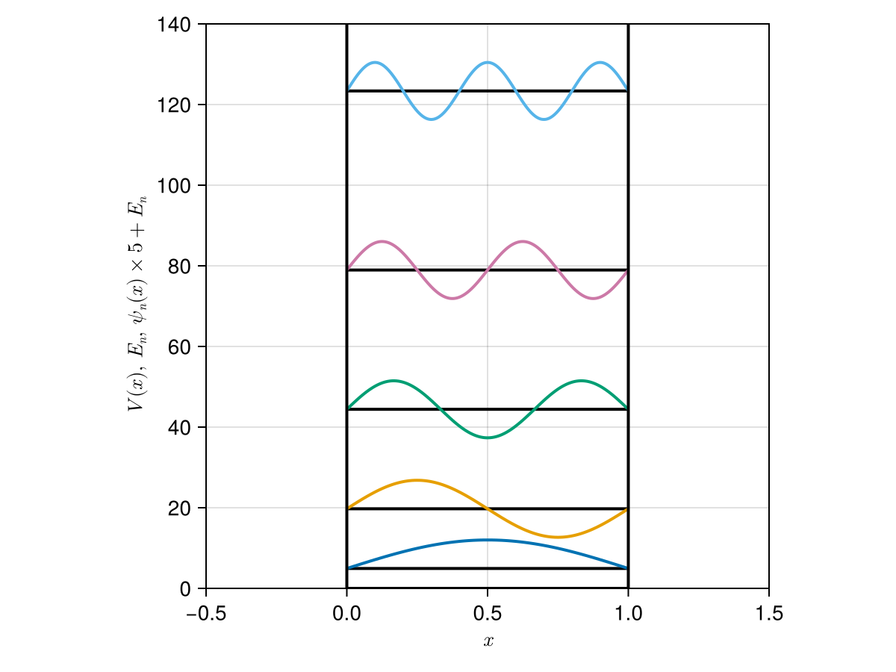
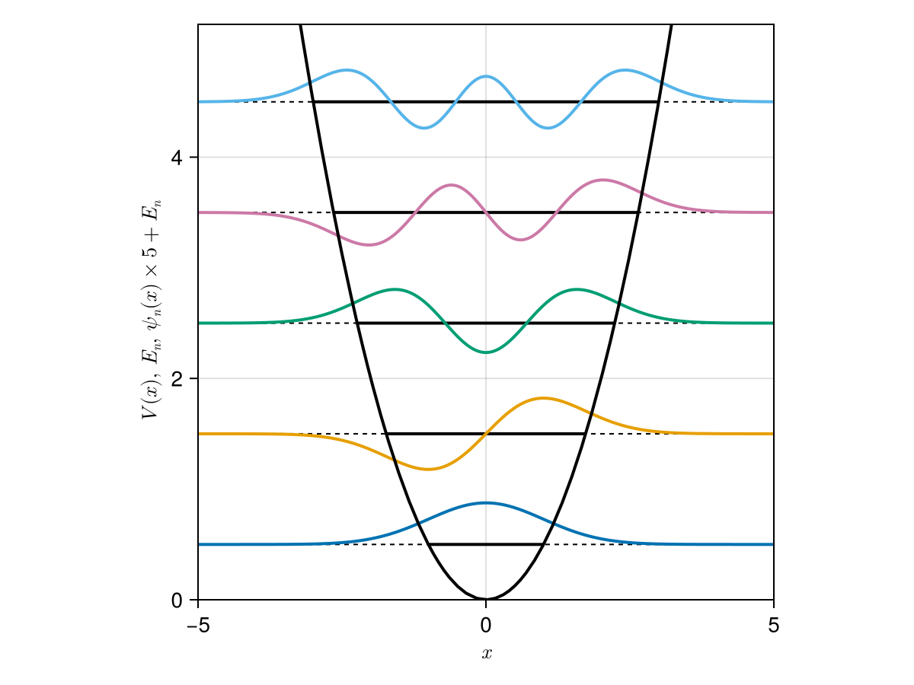
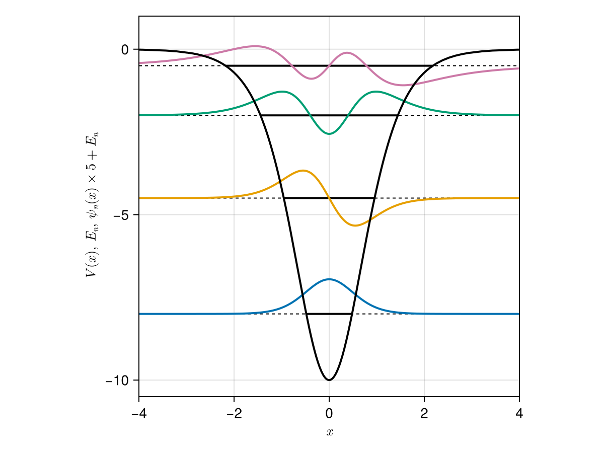
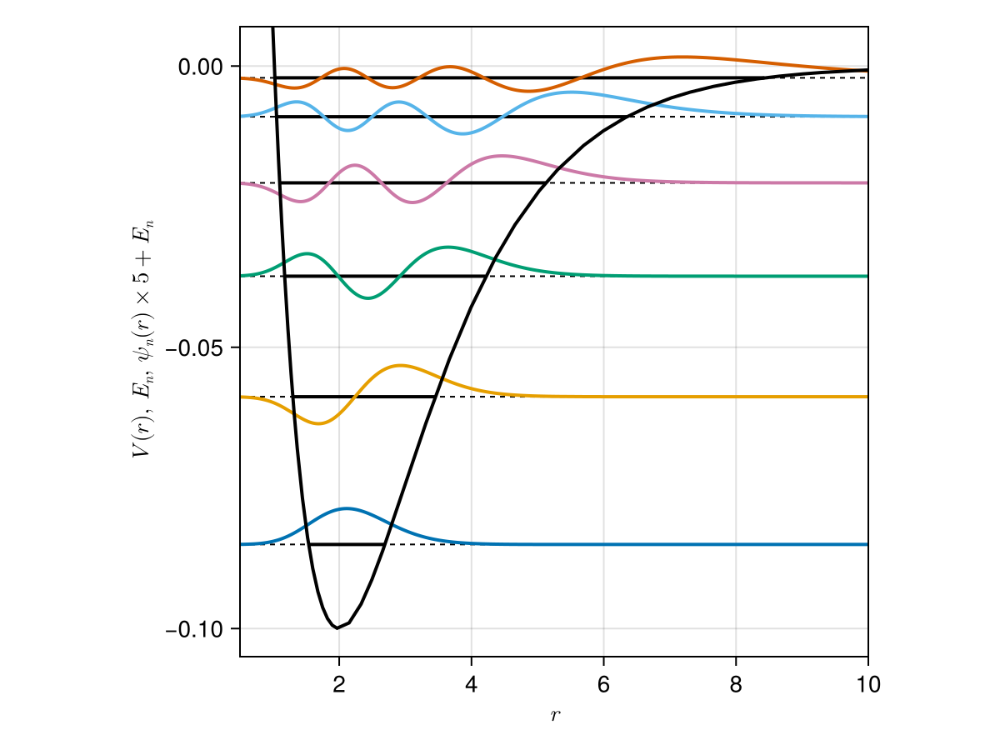
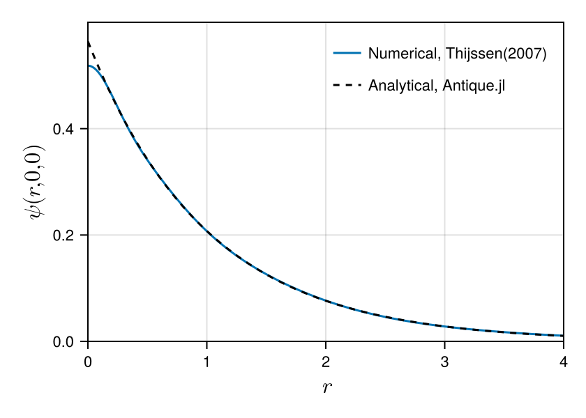

Antique.jl


Antique.jl provides self-contained, well-tested, and well-documented implementations of analytical solutions to solvable quantum mechanical models. Analytical solutions serve as reliable test oracles for software testing in the development of numerical methods. In addition to testing numerical methods, this package is also useful for teaching quantum mechanics. We aim to support researchers, lecturers, students, and anyone interested in quantum mechanics.
Install
Run the following code on the REPL to install this package.
]add Antique@0.15.0Or run import Pkg; Pkg.add(; name="Antique", version="0.15.0") to install on Jupyter Notebook. The version of this package can be found at ]status Antique or import Pkg; Pkg.status("Antique").
Usage & Examples
Install Antique.jl for the first use and run using Antique before each use.
using AntiqueThe three main functions are energy(model; ...) for the energy $E$, potential(model, ...) for the potential $V$, and wavefunction(model, ...; ...) for the wave function $\psi$. They are exported by using Antique. To avoid name conflicts, run import Antique and qualify them as Antique.energy(), Antique.potential(), and Antique.wavefunction(), or import only the names you need, for example using Antique: potential, energy, wavefunction, HarmonicOscillator.
First, create a harmonic oscillator with unit force constant, mass, and reduced Planck constant.
HO = HarmonicOscillator(k=1.0, m=1.0, hbar=1.0)The model parameters can be accessed as properties.
julia> HO.k1.0julia> HO.m1.0julia> HO.hbar1.0
Use energy to calculate the energy of each state specified by the quantum number n.
julia> energy(HO, n=0)0.5julia> energy(HO, n=1)1.5julia> energy(HO, n=2)2.5
Use potential to evaluate the harmonic potential at a position x.
julia> potential(HO, 0.0)0.0julia> potential(HO, 1.0)0.5julia> potential(HO, 2.0)2.0
Use wavefunction to evaluate a wave function for a state n at a position x.
julia> wavefunction(HO, 0.0, n=0)0.7511255444649425julia> wavefunction(HO, 0.0, n=1)0.0julia> wavefunction(HO, 1.0, n=1)0.6442883651134751julia> wavefunction(HO, 100.0, n=1)0.0
There are more examples on each model page.
Supported Models

InfinitePotentialWell

HarmonicOscillator

PoschlTeller

MorsePotential
- Delta Potential
DeltaPotential - Infinite Potential Well
InfinitePotentialWell - Harmonic Oscillator
HarmonicOscillator - PoschlTeller
PoschlTeller - Morse Potential
MorsePotential - Rigid Rotor
RigidRotor - Infinite PotentialWell 3D
InfinitePotentialWell3D - Spherical Oscillator
SphericalOscillator - Hydrogen Atom
HydrogenAtom - Coulomb 2-Body System
CoulombTwoBody
Demonstration
This is an example of a variational calculation for the hydrogen atom based on Thijssen(2007). We check the accuracy of the numerical solution by comparison with the analytical solution. Comparing wave functions can be difficult, but Antique.jl makes it easy. You can extend it to excited states ($n>1$) as well as the ground state ($n=1$). Thus, Antique.jl is useful for testing numerical methods. We hope many numerical methods to be developed using Antique.jl.
# calculations based on Thijssen(2007) https://doi.org/10.1017/CBO9781139171397
using LinearAlgebra
α = [13.00773, 1.962079, 0.444529, 0.1219492]
nₘₐₓ = length(α)
S = [(pi/(α[i]+α[j]))^(3/2) for i=1:nₘₐₓ, j=1:nₘₐₓ]
H = [3*pi^(3/2)*α[i]*α[j]/(α[i]+α[j])^(5/2) - 2*pi/(α[i]+α[j]) for i=1:nₘₐₓ, j=1:nₘₐₓ]
E, C = eigen(Symmetric(H),Symmetric(S))
# norm & energy
import Antique
HA = Antique.HydrogenAtom(Z=1, E_h=1.0, a_0=1.0, m_e=1.0, hbar=1.0)
println("Norm")
println(" numerical : ", transpose(C[:,1]) * S * C[:,1])
println(" analytical: ", 1)
println("Energy")
println(" numerical : ", E[1])
println(" analytical: ", Antique.energy(HA,n=1))
# wave function
using CairoMakie
fig = Figure(size=(420,300), fontsize=11, backgroundcolor=:transparent)
axis = Axis(fig[1,1], xlabel=L"$r$", ylabel=L"$\psi(r,0,0)$", limits=(0,4,0,0.6), ylabelsize=16.5, xlabelsize=16.5)
lines!(axis, 0:0.01:10, r -> sum(C[:,1] .* exp.(-α*r^2)), label="Numerical, Thijssen(2007)")
lines!(axis, 0:0.01:10, r -> real(Antique.wavefunction(HA,r,0,0)), color=:black, linestyle=:dash, label="Analytical, Antique.jl")
axislegend(axis, position=:rt, framevisible=false)
figNorm
numerical : 1.0
analytical: 1
Energy
numerical : -0.49927840566748605
analytical: -0.5
Future Works
The candidate models are listed on the Wikipedia page of List of quantum-mechanical systems with analytical solutions. Please submit your requests and suggestions as issues on GitHub.
Developer Guide
Here is the guideline for adding new models.
Acknowledgment
Thanks to all contributors. This package was named by @KB-satou and @ultimatile. @MartinMikkelsen contributed to writing docstrings. Special thanks to @hyrodium for his help with managing the documentation and advice on coding style. @lhapp27 implemented 2 models, and @ajarifi implemented 3 models.